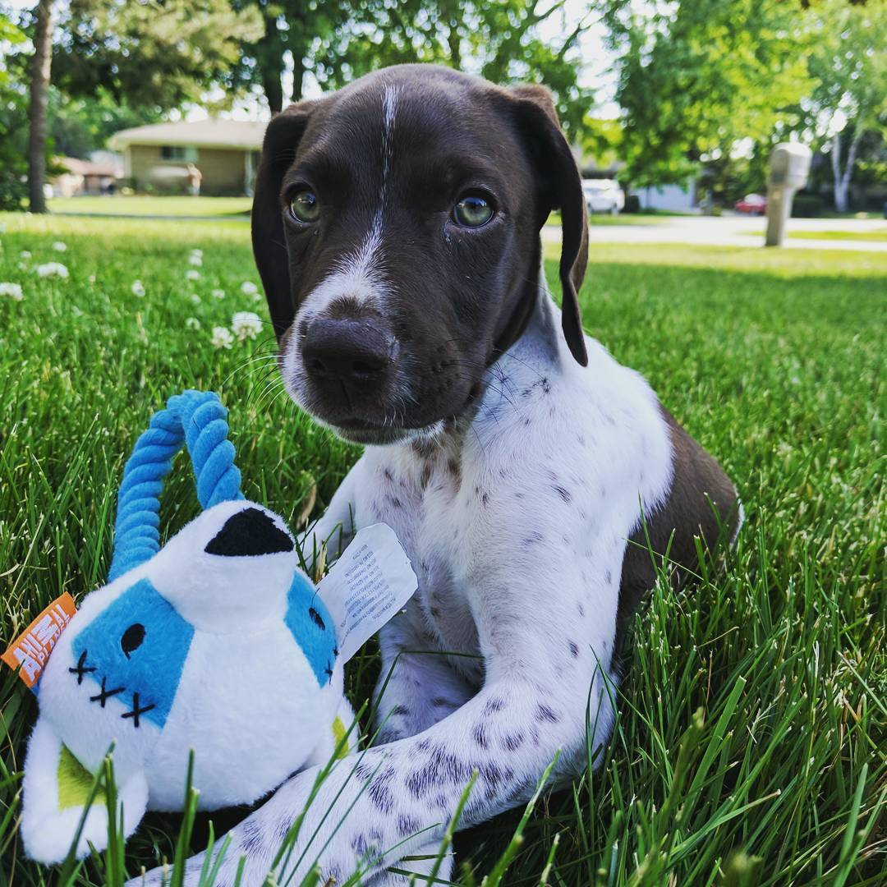
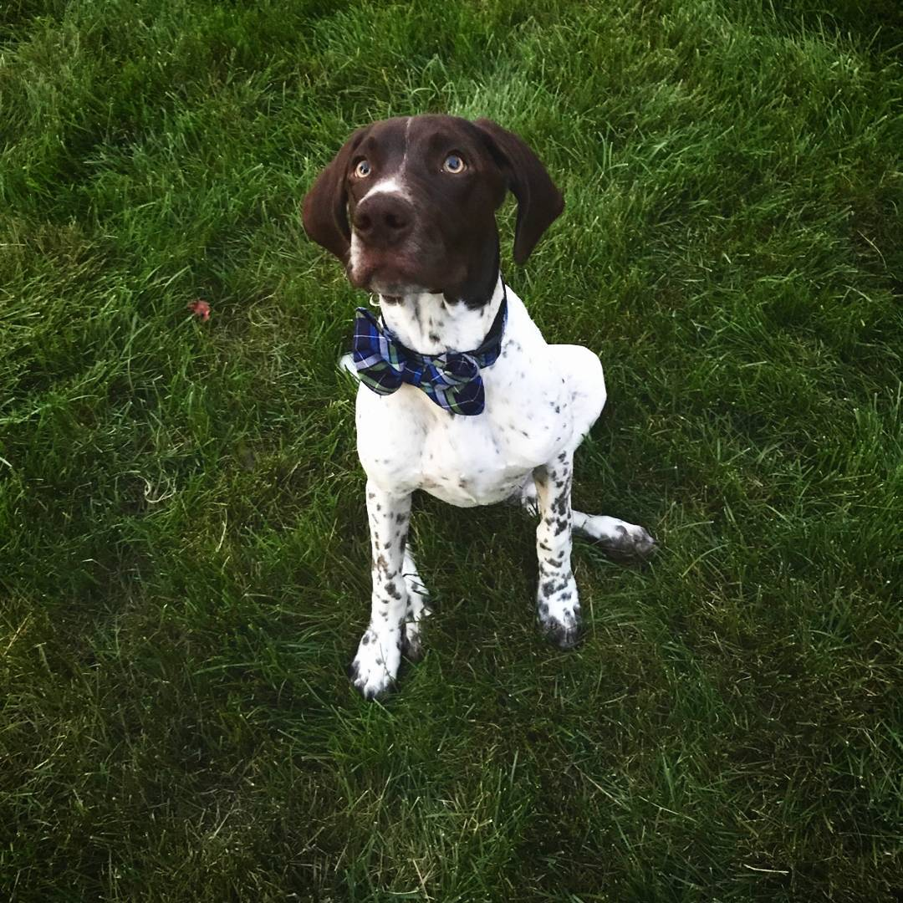

After years of hosting radio talk shows, creating cinimatic content, and serving delicious soft-served ice cream, it was time to fullfill my dream into a reality. Now here I am with my own web-portofolio! I would love to welcome you to my site where you will discover my passion for web development and design. Enjoy!
"This is my precious fur-baby, Briggs! This is when my family first brought him home. He was 8-weeks old in this picture."
"This is not so innocent Briggs, don't let the bow tie fool you! He actually took-off running after this picture."
"This is me during my last semester at Central Michigan University. The Fall is the best time of the year there because the campus is so vivdly beautiful with the color-chaning leafs."